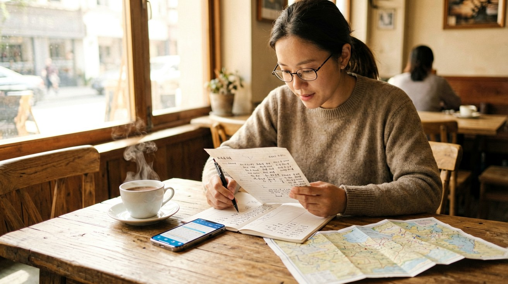
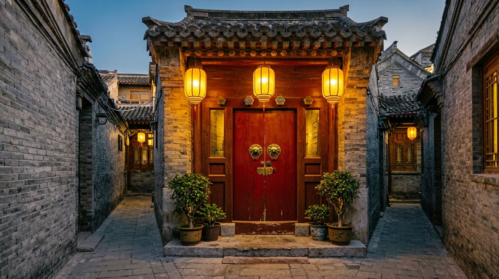
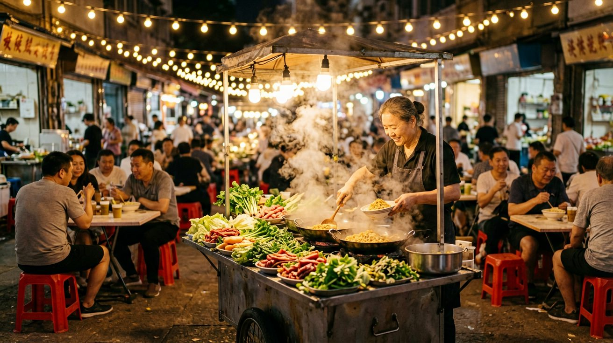
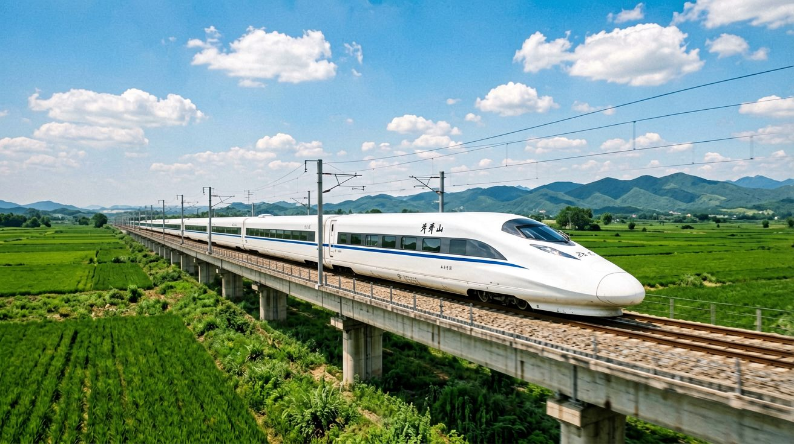
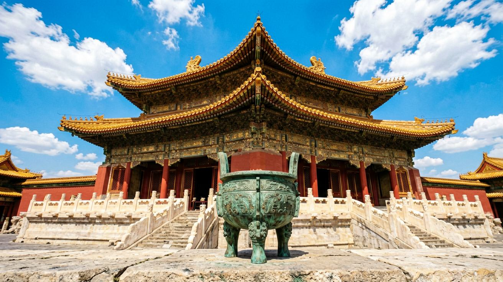
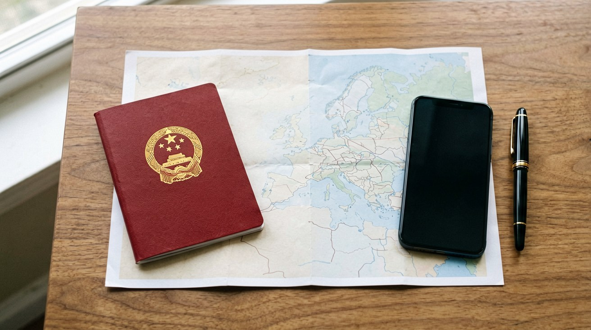
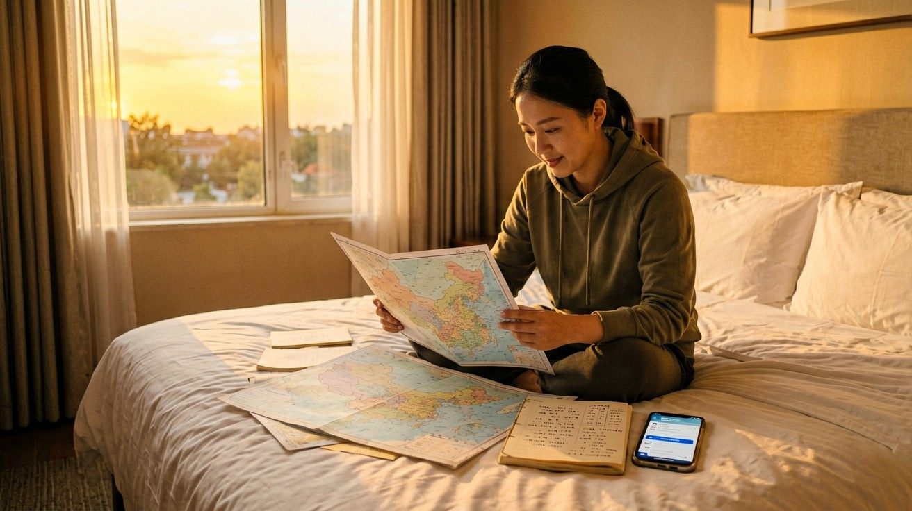

Last updated: July 2026.
China can be a bargain or a blowout — it all depends on the choices you make. A traveler eating street noodles, riding the metro, and sleeping in hostels can get by on ¥350–¥500 a day. Someone booking five-star hotels, eating at top restaurants, and hiring private guides can easily spend ¥2,000–¥3,000 daily. The difference is not the destination; it is the decisions. This guide breaks down every major cost category with real numbers, across three budget levels, so you can plan a trip that matches your wallet — no surprises.

Flights are the largest single expense and the hardest to pin down with a single number. Round-trip economy fares to China typically fall into these ranges: from North America $800–$1,600, from Western Europe $500–$900, from Australia $500–$1,000, and from Southeast Asia $150–$400. These are averages — if you spot a $650 round-trip from Los Angeles, book it. Anything below $700 from the US and $450 from Europe is a good deal.
Timing is everything. China's three domestic travel peaks — Chinese New Year (late January to mid-February), the first week of May (Labor Day holiday), and the first week of October (National Day Golden Week) — push international fares up by 30% to 50%. Summer (June through August) is also expensive because of family travel. The sweet spots are late April, the second half of September, and November. Book 8 to 12 weeks before departure. Use Google Flights or Skyscanner to track prices, then check the airline's own site — buying direct often saves ¥200–¥400 per ticket and makes changes easier if plans shift.
For a detailed look at booking strategies, domestic connections within China, and a comparison of major entry airports, see our guide on Flying to and Within China.

China has a dizzying range of places to sleep, from ¥50 dorm beds to ¥5,000-a-night suites. The critical rule: not every hotel can accept international travelers. Many smaller guesthouses and budget hotel chains lack the license needed to register a foreign passport with local police. When searching on Trip.com, Booking.com, or other platforms, filter for properties marked "Accepts foreign guests." Ignore this step and you risk being turned away at check-in — it happens more often than you would think. For a full walkthrough of booking platforms, check-in paperwork, and what each price tier actually delivers, see our Where to Stay in China guide.Here is what you can expect per night:
| Budget Level | Price (per night) | What You Get |
|---|---|---|
| Budget | ¥80–¥200 | Hostel dorm beds, basic private rooms in chains like Hanting or 7 Days Inn. Clean but minimal — shared bathrooms at the low end, thin walls, little English spoken. |
| Mid-Range | ¥300–¥700 | Holiday Inn Express, Atour, Ji Hotel, or similar 3-to-4-star options. Private bathroom, solid location near a metro station, breakfast often included, English-speaking front desk. |
| Luxury | ¥800–¥2,500 | International five-star brands (Marriott, Hilton, Shangri-La), boutique courtyard hotels in Beijing hutongs, or high-rise rooms with skyline views in Shanghai. Full concierge services in English. |
For a 10-day trip, accommodation totals roughly ¥800–¥2,000 at the budget end, ¥3,000–¥7,000 mid-range, or ¥8,000–¥25,000 at the luxury level. If you are visiting multiple cities, book refundable rates — train delays happen and plans change.

Food is where China shines brightest for budget travelers. A bowl of Lanzhou beef noodles (兰州拉面) costs ¥15–¥20 and is a filling meal. Steamed dumplings for two at a neighborhood shop: ¥30–¥50, with vinegar and chili oil on every table. Jianbing — the savory breakfast crepe cooked on a griddle — runs ¥6–¥10 from a street cart. Eating local and eating cheap are the same thing here, and the quality at the bottom of the price ladder is genuinely good.Moving up: a proper hotpot dinner for two at a mid-range chain like Haidilao runs ¥150–¥250. Casual sit-down restaurants where you order three or four shared dishes: ¥60–¥120 per person. Western-style coffee from Luckin or Manner: ¥10–¥25. At the top, a Peking duck banquet at a heritage restaurant in Beijing or a tasting menu at an upscale Shanghai restaurant can reach ¥400–¥800 per person. Hotel breakfast buffets in international chains: ¥80–¥180.
Here is a realistic daily food budget:
| Budget Level | Daily Food Budget | Typical Choices |
|---|---|---|
| Budget | ¥60–¥100 | Street food, noodle shops, steamed buns (baozi), convenience store snacks, local breakfasts. Three square meals for under ¥100 total is entirely doable. |
| Mid-Range | ¥150–¥300 | Mix of casual restaurants, food courts in shopping malls, one sit-down dinner. Try regional specialties — Hunan stir-fries, Sichuan mala, Cantonese dim sum — without worrying about the bill. |
| Luxury | ¥400–¥800+ | Fine-dining dinners, hotel breakfasts, craft cocktail bars, afternoon tea. Tasting menus at Michelin-recommended restaurants in Shanghai and Beijing are world-class. |
For restaurant recommendations and practical tips on ordering without Chinese, see our Essential Chinese Food Guide for First-Time Visitors and the How to Order Food in China guide.

Getting between cities in China is faster and cheaper than most people expect. The high-speed rail network connects every major city: Beijing to Shanghai in 4.5 hours, Shanghai to Hangzhou in 45 minutes, Xi'an to Chengdu in 3.5 hours. Here is what intercity travel costs:| Route | Train Type | Duration | Second Class | First Class |
|---|---|---|---|---|
| Beijing → Shanghai | G-series HSR | 4.5 hours | ¥553–¥673 | ¥933–¥1,017 |
| Shanghai → Hangzhou | G-series HSR | 45 minutes | ¥73–¥93 | ¥117–¥147 |
| Xi'an → Chengdu | G-series HSR | 3.5 hours | ¥263 | ¥421 |
| Beijing → Xi'an | G-series HSR | 4.5–5.5 hours | ¥516–¥576 | ¥825–¥913 |
As of mid-2026, second-class fares on the Beijing–Shanghai route saw a roughly 20% increase (now ¥553–¥673). Other routes have remained more stable, but occasional adjustments happen — check current pricing when you book. For a comprehensive guide to buying tickets with a foreign passport, navigating stations, and understanding the class system, see our How to Use China's High-Speed Trains guide.
Once you are in a city, getting around is fast and affordable. Metro rides in major cities cost ¥2–¥9 depending on distance. City buses are ¥1–¥2 per ride. Taxi flag-down rates start at ¥10–¥14 for the first 3 kilometers, with ¥2–¥3 per additional kilometer. DiDi (ride-hailing) costs roughly the same as taxis, sometimes less during off-peak hours. For day-to-day local transport, budget ¥20–¥60 per day — more if you rely heavily on taxis, less if you stick to the metro. A full breakdown of every option is in our Local Transport in China guide.

China's attractions are not universally cheap — but most are good value. Entry fees for the headline sights are listed below, and they apply to everyone. Holding a student card with an ISIC logo sometimes gets you a half-price ticket, but this is inconsistent, so do not count on it.| Attraction | City | Entry Fee (2026) |
|---|---|---|
| The Forbidden City (Palace Museum) | Beijing | ¥60 (Apr–Oct) / ¥40 (Nov–Mar) |
| Great Wall (Badaling) | Beijing | ¥40 (Apr–Oct) / ¥35 (Nov–Mar) |
| Summer Palace | Beijing | ¥30 (Apr–Oct) / ¥20 (Nov–Mar) |
| Temple of Heaven | Beijing | ¥35 (Apr–Oct) / ¥30 (Nov–Mar) — combo ticket |
| Mogao Caves (Dunhuang) | Dunhuang | ¥238 (reservation required) |
| Leshan Giant Buddha | Leshan | ¥80 |
A few practical notes: tickets for the Forbidden City sell out fast — book online through the Palace Museum's official WeChat mini-program, ideally a week ahead. Many attractions, including the Palace Museum, no longer offer on-site ticket sales; everything is pre-booked online. The Great Wall has multiple sections beyond Badaling (Mutianyu is ¥45, Jinshanling is ¥65, and Simatai is ¥40), each with different access and crowds. A full Beijing guide with attraction strategies is available here: Beijing Travel Guide.
Beyond entry tickets, budget for in-site add-ons: cable cars at the Great Wall run ¥100–¥140 round-trip, audio guides and English tours at major museums cost ¥40–¥200, and evening shows like the Tang Dynasty music-and-dance performance in Xi'an start at ¥300. Many temples and parks (Temple of Heaven, Summer Palace, public sections of West Lake in Hangzhou) also sell internal-area add-on tickets once you are inside — sometimes the "combo ticket" at the gate is the better deal. Read the fine print on the ticket before you buy.

Costs you incur before setting foot in China matter just as much as what you spend on the ground. For a complete breakdown of the L-visa application process, required documents, and processing timeline, see our China Tourist Visa (L-Visa) Guide. Here is a summary of upfront costs:| Item | Cost | Notes |
|---|---|---|
| China L-Visa (US citizens) | $140 | Temporarily reduced from $185; extended through December 31, 2026. Additional express or visa-center service fees may apply. |
| China L-Visa (other nationalities) | $30–$125 | Varies by nationality and reciprocity agreements. UK: £151. Australia: A$109.50. EU varies by country; check your local Chinese visa center. |
| Visa-free entry | ¥0 | Passport holders from 50 countries can enter China visa-free for stays up to 30 days. Policy extended through December 31, 2026, and may be extended further. |
| Transit without visa | ¥0 | 240-hour (10-day) transit without visa for 54 eligible nationalities transiting through specific ports. Requires confirmed onward ticket to a third country. |
Travel insurance: Not mandatory, but strongly recommended. A comprehensive policy covering medical expenses, trip cancellation, and lost baggage costs $30–$80 for a 2-week trip, depending on your age and coverage limits. Medical care for non-residents in China requires upfront payment — a hospital visit for a minor issue can easily cost ¥500–¥1,500 without insurance.
Staying connected: A VPN subscription for accessing Google, WhatsApp, Instagram, Gmail, and other blocked services costs $3–$15 per month. Install and test it before departure — many VPN provider websites are blocked inside China, so you cannot download or subscribe once you arrive. For VPN recommendations and setup guidance, see VPN for China: What You Need Before You Land. A local eSIM or travel SIM with a Chinese phone number costs roughly ¥50–¥150 for a 2-week data package — having a local number is helpful for ride-hailing app verification, restaurant queue systems, and hotel contact, though not strictly required with offline-ready apps.
Mobile payment setup: Alipay and WeChat Pay now support international credit and debit cards (Visa, Mastercard, Amex), making mobile payments accessible without a Chinese bank account. Setup is free, but transaction fees of 3% apply to single payments over ¥200. For a step-by-step walkthrough, see our Mobile Payment in China guide.

The numbers above add up differently depending on your travel style. Below are realistic daily budgets — excluding international flights — for three trip profiles. Multiply by the number of days you plan to spend in China and add your round-trip airfare for the full picture.Budget traveler: ¥400–¥600 per day ($55–$85). You sleep in hostel dorms or the most basic private rooms (¥80–¥180), eat at street stalls and local noodle shops (¥60–¥100), get around by metro and bus (¥20–¥40), visit one major paid attraction every other day. A 10-day trip, excluding international flights, comes to roughly ¥4,000–¥6,000 ($550–$850). Add a ¥500 buffer for a VPN, SIM card, and incidental costs. This is entirely doable without feeling deprived — the street food is excellent, the metro is efficient, and hostels in major cities like Beijing and Chengdu are social and well-located.
Mid-range traveler: ¥900–¥1,400 per day ($125–$195). You stay in solid 3-to-4-star hotels (¥300–¥600), eat well at sit-down restaurants with occasional street food (¥150–¥300), take a mix of metro and occasional taxis or DiDi (¥40–¥80), and visit one attraction daily (¥40–¥100). For a 10-day trip: ¥9,000–¥14,000 ($1,250–$1,950) before flights. This is the sweet spot — private rooms with your own bathroom, the ability to eat anywhere that looks good, and enough comfort that you are not counting every yuan.
Comfort traveler: ¥1,800–¥3,000 per day ($250–$420). International-brand five-star hotels (¥800–¥2,000), a mix of fine dining and quality casual restaurants (¥400–¥800), taxis and private transfers (¥100–¥250), guided tours and all major attractions (¥150–¥400). A 10-day trip: ¥18,000–¥30,000 ($2,500–$4,200) before flights. At this level you are not really budgeting — you are just traveling.
Here is how a 10-day, two-city trip (Beijing and Shanghai) breaks down at each level, excluding international flights:
| Category | Budget | Mid-Range | Comfort |
|---|---|---|---|
| Accommodation (10 nights) | ¥800–¥2,000 | ¥3,000–¥6,000 | ¥8,000–¥20,000 |
| Food (10 days) | ¥600–¥1,000 | ¥1,500–¥3,000 | ¥4,000–¥8,000 |
| Intercity train (Beijing–Shanghai, RT) | ¥1,106–¥1,346 | ¥1,106–¥1,346 | ¥1,866–¥2,034 |
| Local transport (10 days) | ¥200–¥400 | ¥400–¥800 | ¥1,000–¥2,500 |
| Attractions and activities | ¥300–¥600 | ¥600–¥1,200 | ¥1,500–¥4,000 |
| Visa, insurance, VPN, SIM | ¥400–¥1,200 | ¥500–¥1,400 | ¥600–¥1,500 |
| Total (before flights) | ¥3,406–¥6,546 | ¥8,106–¥13,746 | ¥16,966–¥38,034 |
A few final thoughts. First, China rewards cashless planning: the metro, high-speed trains, attractions, and most restaurants expect digital payment. Set up Alipay or WeChat Pay before you arrive — it is the single biggest friction reducer after your visa. Second, prices vary by city: Shanghai, Beijing, and Shenzhen sit at the top of the cost curve; Chengdu, Xi'an, and Kunming cluster in the middle; smaller cities like Guilin, Lijiang, and Pingyao can be 20%–40% cheaper across the board. Third, your largest costs (flight and hotel) are the easiest to control: book early, travel in shoulder seasons, and choose your accommodation tier with intention. Everything else — food, transport, attractions — is good value at every level.
This article is based on information as of July 2026.
Sources
Prices and policies may change. Verify the latest information before your trip.